Halo semua, Saya 👋
Fatih Muzaqi |
"Orang yang sudah berhasil mengalahkan rasa malas dan keraguan dalam dirinya, akan lebih mudah meraih apa pun yang dia impikan."
Dedikasi Penuh Membangun Solusi Web yang Efisien & Modern
Saya adalah mahasiswa Teknik Informatika di STMIK YMI Tegal yang memiliki antusiasme dan komitmen tinggi dalam dunia software engineering, khususnya arsitektur dan pengembangan aplikasi web.
Terbiasa membangun sistem mulai dari perancangan basis data, RESTful API yang kokoh dengan Node.js dan Express, hingga antarmuka responsif yang interaktif dan ramah pengguna. Memiliki kemampuan komunikasi yang baik, senang berkolaborasi dalam tim, dan selalu terbuka untuk mempelajari teknologi mutakhir.
Latar Belakang Akademis
Jejak pembelajaran formal dan pelatihan teknis yang membentuk fondasi keahlian software engineering saya.
Sarjana (S1) Teknik Informatika
STMIK YMI TEGAL
Mendalami pemecahan masalah komputasi, struktur data dan algoritma, perancangan basis data relasional, pemrograman berorientasi objek, serta arsitektur sistem informasi. Aktif sebagai koordinator minat & bakat pada UKM Mancing (Mahasiswa Pecinta Coding).
Teknik Komputer & Jaringan (TKJ)
SMK Ma'Arif NU 01 Suradadi
Mempelajari dasar instalasi sistem operasi, konfigurasi jaringan komputer (LAN/WAN, routing, switching), pemeliharaan perangkat keras, administrasi server Linux, serta pondasi logika pemrograman.
Karya & Solusi Digital
Kompilasi proyek nyata yang saya bangun untuk instansi pemerintahan, institusi pendidikan, dan platform digital publik.
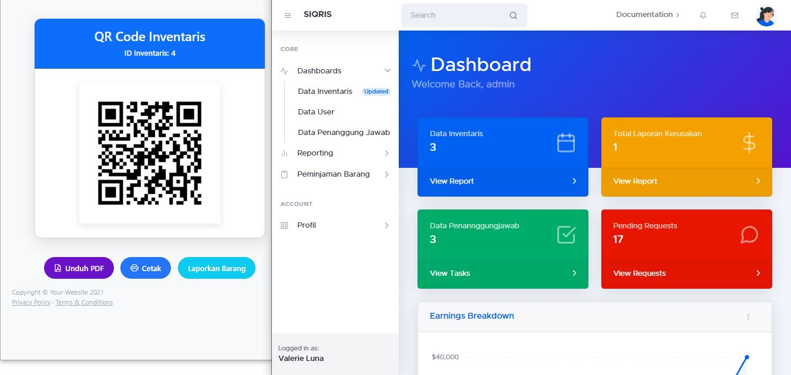
Inventaris SistemSistem QR Code Inventaris (SIQRIS)
Sistem inventaris aset instansi berbasis QR Code untuk kemudahan pelacakan, pencatatan otomatis, dan pelaporan barang secara terpadu.
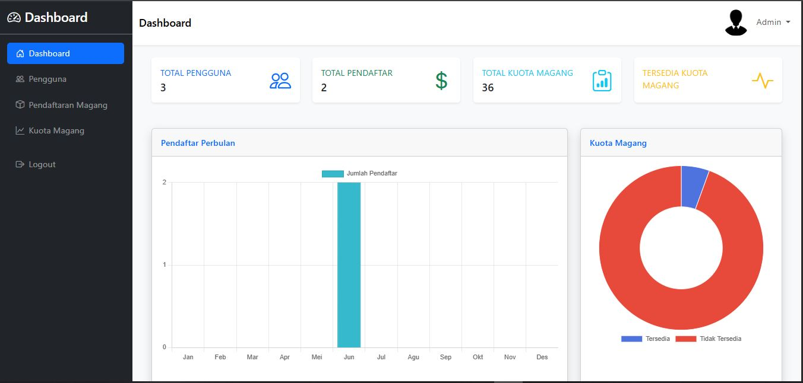
Portal PendaftaranSistem Pendaftaran Magang Online
Aplikasi web untuk mengelola penerimaan dan verifikasi berkas magang mahasiswa secara terpusat, transparan, dan efisien.
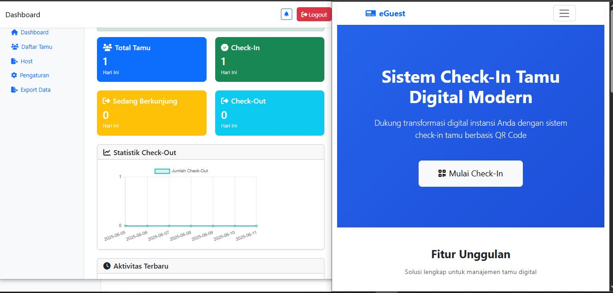
Buku Tamu DigitalSistem Check-In Tamu Digital
Mencatat data kunjungan tamu secara elektronik pada instansi pemerintah untuk menggantikan formulir manual dan meningkatkan keamanan.
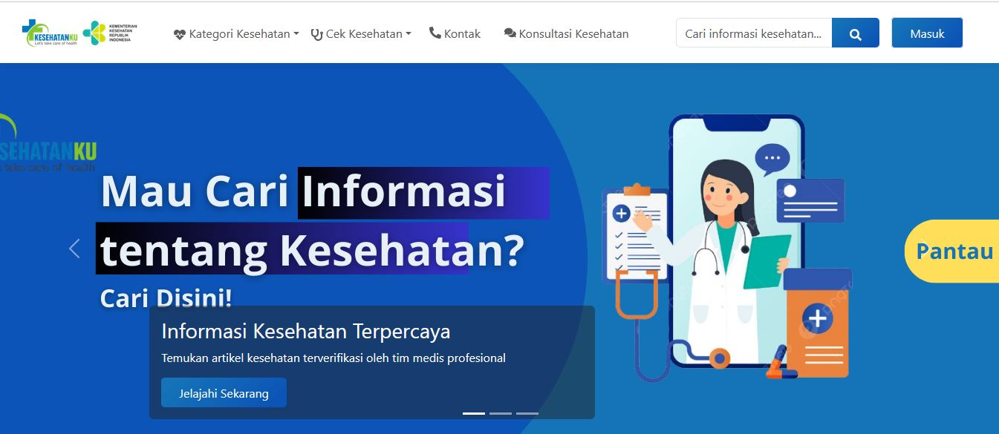
HealthTech & AI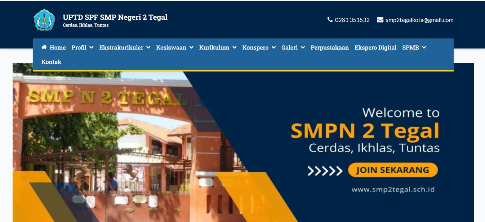
Web SekolahSistem Informasi SMP N 2 TEGAL
Website portal profil sekolah resmi yang menyajikan data profil, prestasi murid, fasilitas sarana, dan informasi kegiatan akademik secara responsif.
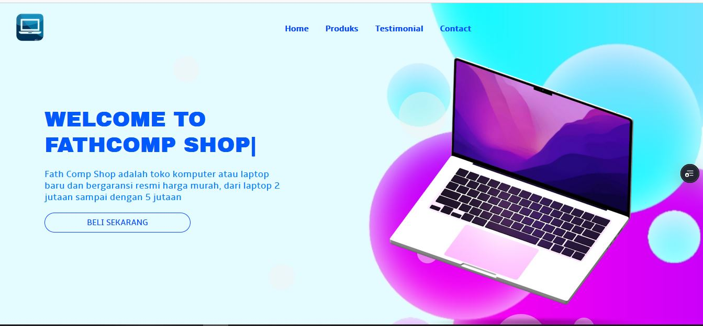
E-Commerce & PWALanding Page Laptop PWA
Landing page promosi produk laptop modern dengan kemampuan Progressive Web App, performa optimal, dan tampilan adaptif di semua resolusi layar.
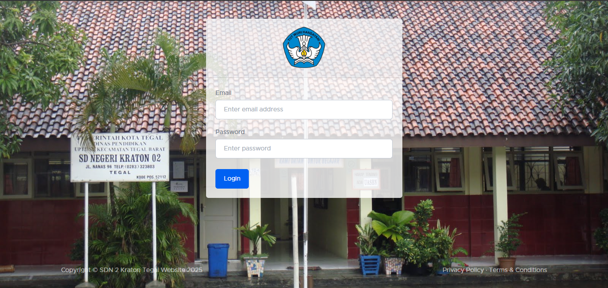
Manajemen KehadiranSistem Absensi Digital
Aplikasi rekapitulasi absensi elektronik dengan validasi waktu presisi, rekap data kehadiran, dan pencetakan laporan otomatis.
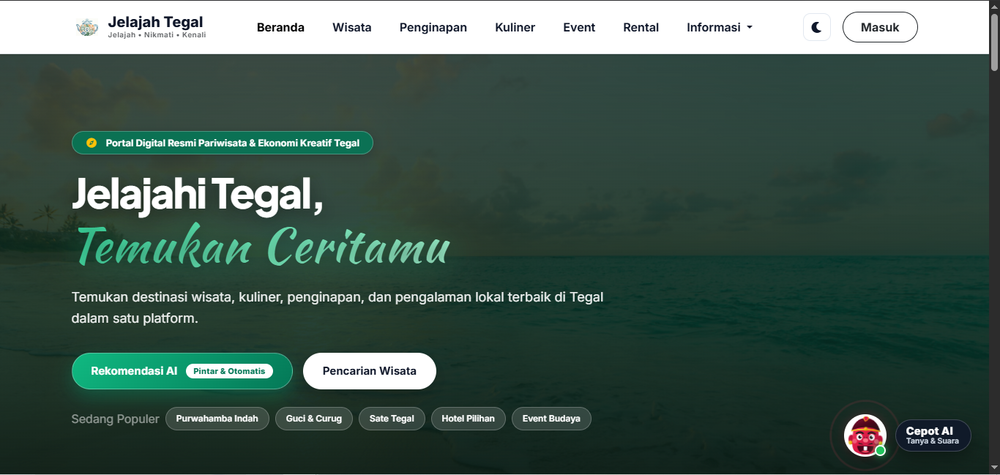
Portal WisataJelajah Tegal - Wisata Daerah
Platform promosi destinasi wisata kuliner, sejarah, dan alam di wilayah Kabupaten & Kota Tegal dengan antarmuka interaktif.
Keahlian & Teknologi
Bahasa pemrograman, runtime, framework, dan tools yang saya gunakan secara aktif dalam mengembangkan produk digital.
Frontend Development
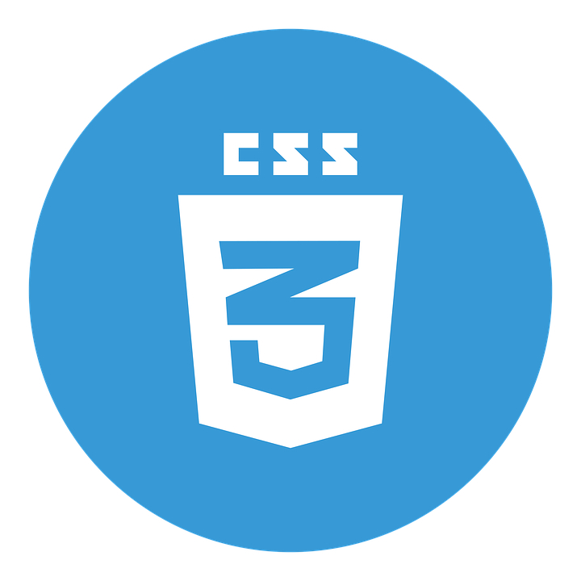
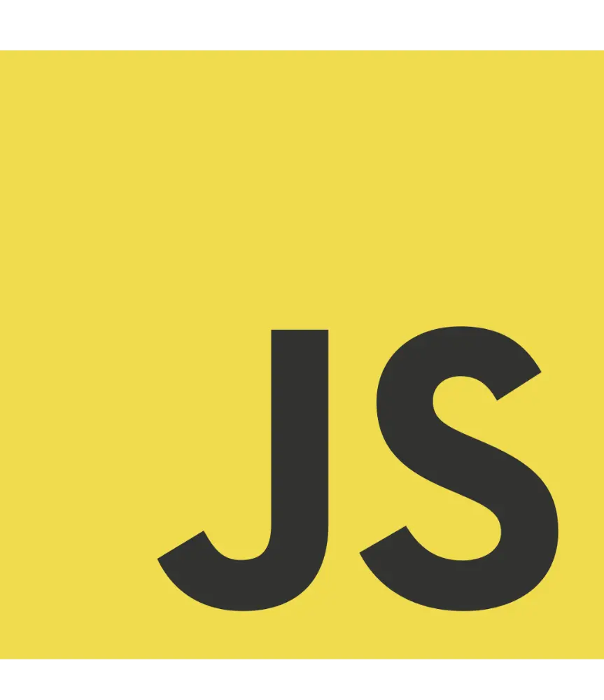
Backend Development
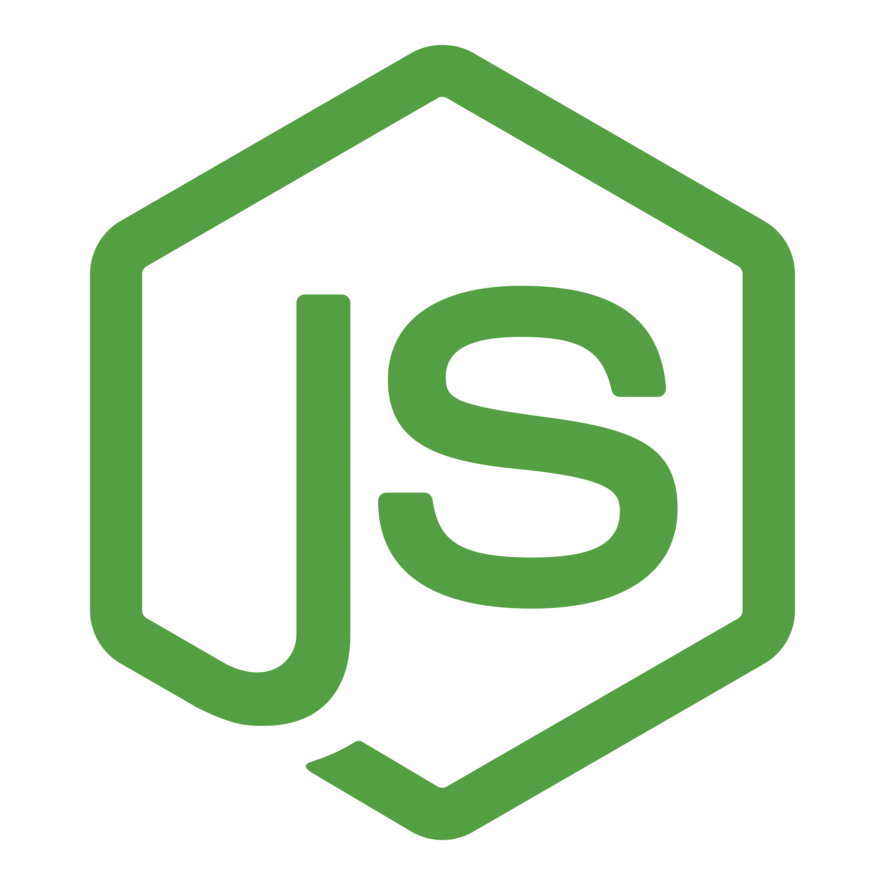
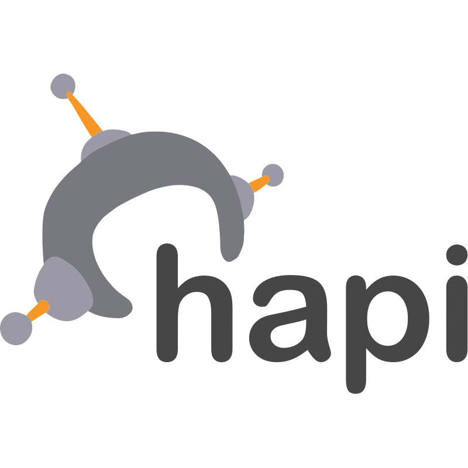
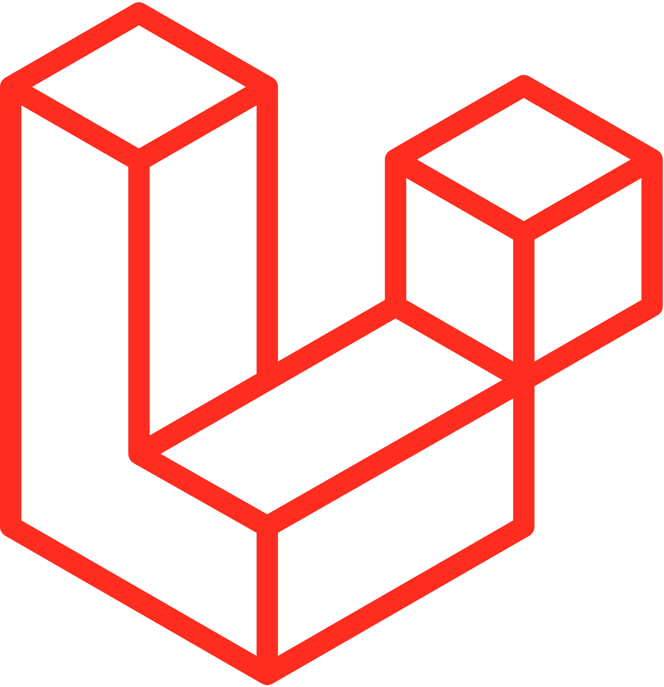
Database & Tools
Kompetensi & Sertifikasi
Bukti pelatihan dan sertifikasi kompetensi industri dari platform Dicoding Indonesia dan Oracle Academy. Klik sertifikat untuk melihat tampilan pratinjau.

Backend Pemula dengan Javascript

Belajar Dasar Git dengan GitHub

Belajar Dasar Pemrograman Javascript

Belajar Dasar Pemrograman Web

Fundamental Front-End Web Development

Membuat Front-End Web untuk Pemula

Dasar Pemrograman untuk Menjadi Pengembang

Pengembangan Web Intermediate
_page-0001.jpg)
Pengenalan ke Logika Pemrograman (Logic 101)

Cloud Practitioner Essentials (Dasar AWS)
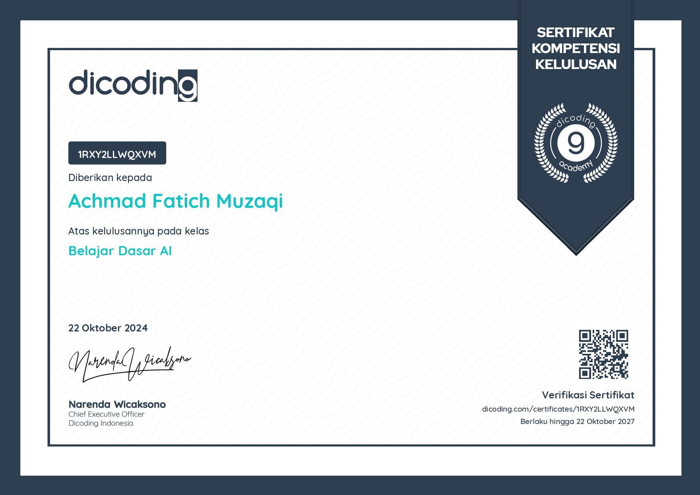
Belajar Dasar AI

Database Foundations

Java Fundamentals & Algoritma

Financial Literacy
Nama Sertifikat
Penerbit
Mari Berkolaborasi!
Punya tawaran proyek, peluang magang/pekerjaan, atau pertanyaan? Kirimkan pesan langsung melalui formulir di bawah ini.
Kirim Pesan Langsung
Isi form di bawah, saya akan membalas pesan Anda secepatnya.